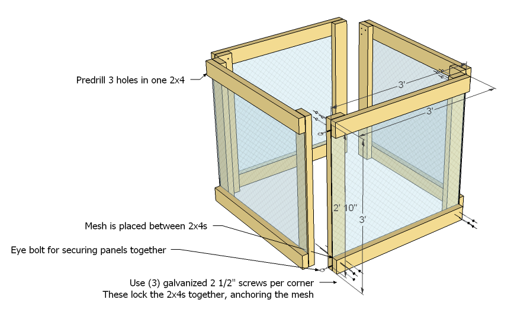
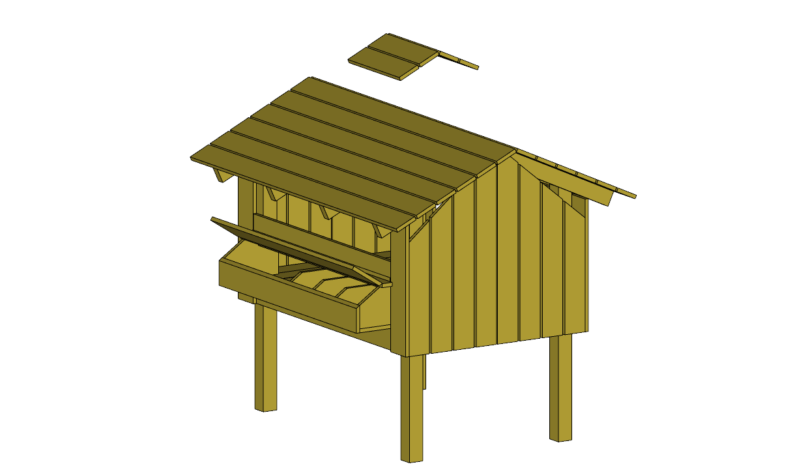
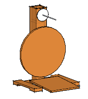
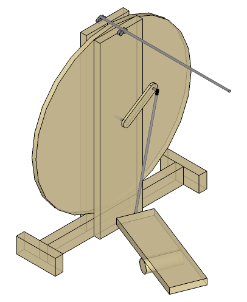
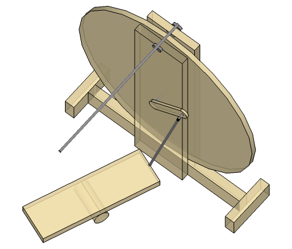
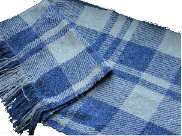

Thistle Ridge Farm Projects
Animals
- Sheep
- Romneys have great fleece, low-maintenance feet
- Goats
- Boers, Kikos, and Cashmere are low maintenance
- Livestock costs
- Breeds
- Fencing
- Drive posts in spring (soft ground) with bucket of backhoe, use metal post cap welded up to keep bucket from sliding on the top of the post as it pushes
- 6 1/2’ cedar posts off craigslist?
- Perimeter fence layout
- Use 16’ Cattle welded-wire panels?
- Does not need corners (no tension)
- Start fencing for both E and W pasture by installing permanent N-S fences near barn, several panels of E-W fencing, and movable back line, to allow progressive fence installation
- Every 2 panels deep in both directions = 1/4 acre
- Start with 1 acre, which is ~75 panels
- Portable electric mesh for pasture management
- Cut locust from backyard for posts
- Cut in may-june when sap is running, so they can be debarked easily
- Pasture Map
Rain Water Cistern
- Provides irrigation water to gardens
- Collects runoff from Barn roof
- 2500 sf
- 1/4” event yields almost 400 gallons
- secondary benefit = keeps ground around outside of barn from getting marshy
- 2500 sf
- Main Storage tanks
- elevated to provide head to fill transport tank
- Discharge header
- Connect to inline transfer pump for filling transport tank
- Flex hose at one end allows control of fill level, overflow protection, and winter drain
- Field storage tanks (65 gall x 2)
- located upslope of gardens
- needs low pressure emitters
- kept inside ply “doghouse” to avoid algal growth and for appearance
- main shutoff valve and hose quick-connects
- open top for filling
- located upslope of gardens
- Transport tank (65 gall)
- strapped into tractor trailer bed
- filled via gravity from main storage tanks
- fills field storage tank via gravity
- park tractor upslope
- large diameter fill hose
- fills field storage tank via pump
- use tractor to power 12V transfer pump
Tractor
- What it needs to do
- manage manure and compost
- attachment
- bucket (at least 4’ wide)
- attachment
- minor row cropping
- attachments
- disk tiller
- harvester
- plow
- attachments
- pasture management
- attachments
- bush hog
- mower
- attachments
- backup to snowplow
- attachment
- plow blade
- attachment
- backup generator
- attachment
- hydraulic motor & genset head
- attachment
- log splitter
- attachment
- ram
- attachment
- manage manure and compost
- options
- Buying a used tractor with a front end loader
- cost: ~18K
- Riding mower upgrade
- Can only do about half of the things I need
- cost: ~2K
- Fix up an antique
- Antique tractors are easy to repair and get parts/attachments for
- Small, so:
- replace and sell riding mower
- will fit in barn better
- Bucket attachment not easy
- can’t mount on front
- rear end loader perfect solution but not easy to find
- need to fabricate one
- cost: ~2.5K (but -1K from selling rider mower?)
- Models
- Farmall H, B, C, cub
- Case V or VC
- Allis Chalmers WD
- Build one
- cost: ~$5-9K?
- Buying a used tractor with a front end loader
Composting

Chicken Tractor
- Wheels for moving with tractor
- lightweight run
- light-sensitive door

Making Food
- Equipment
- Food press
- multifunction
- cider
- cheese
- grapes (wine)
- sunflower oil
- Built of wood
- Start with press frame from Jeff’s basement?
- powered by hydraulic bottle jack
- Homemade Plans
- multifunction
- Food mills
- multifunction
- cider
- grapes (wine)
- Sunflower seeds
- Marathon Uni-mill (stone grinders)
- multifunction
- Dryer
- multifunction
- hops
- barley
- homemade
- old bee boxes
- old hair dryer
- Reference
- Homebrew gardening book has plans
- multifunction
- Grinder
- grandma’s old table-clamp unit good for relish, nuts, meats
- needs new cutter?
- attachment for making sausage?
- grandma’s old table-clamp unit good for relish, nuts, meats
- Dough mixer
- pasta
- stretch bread
- Turkey fryer
- fried turkey, duck, chicken
- New england boiled dinner
- Boil wort for beermaking?
- Smoker
- sausages
- fish
- cheese
- Food press
- Cheesemaking
- References
- Cheese Chronicles - Liz Thorpe
- Jasper Hill Farm, Greensboro VT
- Lively Run Goat Dairy, Interlaken NY
- Raw Milk Sources
- Mozzarella
- Queso Blanco
- Creme Fraiche
- Jack
- References
- Maple Sugaring
- Collection
- plastic taps
- 5-gal buckets
- Store in buckets with lids
- Boil
- Stainless chafing pans over cinder block wood fire pit
- Turkey fryer run on propane
- Log
- 2007
- Tapped all 5 trees, one tap apiece
- About a gallon of syrup
- 2008
- Tapped all 5 trees, one tap apiece
- Interrupted by vacation
- Tried a straw bale fire pit with blower, almost had to call fire dept.
- About a gallon of syrup
- 2010
- Tapped 3 northern trees
- 2007
- References
- Equipment supplier
- Collection
- Gardening records
Yarn Farm
home made equipment
Drum Carder
- motorized
- guts from an old electric drill
- put trigger into foot pedal
- bi-directional
- allows 2-handed fiber management
- guts from an old electric drill
- main drum
- size
- 12” wide by 15.25” diameter
- 48” circumference
- 576 sq. in.
- 12” wide by 15.25” diameter
- laminated plywood
- size
- roving guide
- diz?
- doffing netting strip
- maybe just skip the whole roving thing
- chain driven
- front bike cassette sprokets for multiple carding ratios
- small tension sproket
- motorized
- small sproket outside of chain loop for main drum
- cloth
- 1/2” deep
- can use netting for doffing
- netting attached at one end under groove guide
- can use netting for doffing
- ~100 PSI
- find a manufacturer who gives samples
- too expensive from fiber dealers
- need about 50’ of 1” tape
- 1/2” deep
Loom
- counter-balance style (overhead)
- 48”
- 4 harnesses
- simplest possible to make tartan with
- 6 treadles
- string heddles
- may be better to purchase some steel ones
- ball bearings on beater and counter balances
- sectional warp winder
- counter on warp beam or warp roller
- use 18” circumference rollers for ease of counting?
- counter on warp beam or warp roller
- collapsable
- uses standard purchased reeds
- needs a clever brake system
- equal size warp and cloth rollers w/ chain & sprokets?
- keeps tension equal throughout cloth
- foot brake to adjust tension
- equal size warp and cloth rollers w/ chain & sprokets?
- References
- Paula Simmon’s books
References
- David Bryant’s book “wheels and Looms”
Spinning Wheel
- quill spindle style
- simplicity of construction
- flexibility in yarn type
- can also wind shuttle bobbins and make center pull balls
- speed
- no orifice threading
- single treadle
- simplicity
- dual action
- Can be set at any angle from wheel, to adjust position of wheel relative to spinner
- Primary drive wheel
- 20” diameter
- Solid laminated wood
- Dimensionally stable
- Axis position is adjustable
- Quill Drive
- Driven by direct contact with drive wheel
- Held in place between drive wheel and roller bearings
- 80:1 ratio for quill speed of ~250rpm
- References
- Peguin wheel



warping board
- two 1x2s 4’ long with 3” nails every 8”, nailed to wall 5’ apart
References
- Paula Simmon’s books
- Book of wheel and loom plans
shearing done in-house
- need classes and about $500 in equipment to get started
Time saving shortcuts
- washing and dyeing done in one step
- washfast acid dyes (G & K? RIT?)
- safety
- simplicity
- color-fastness
- washfast acid dyes (G & K? RIT?)
- weave with singles
- sectional warping
